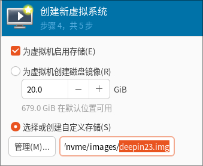
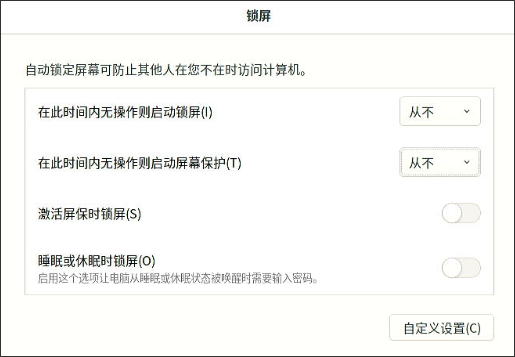

Year2025
用来记录2025年每天所做的事情，主要是技术类。
From 2025Feb06
| Date | Conclusion |
|---|---|
| 20250206 | ollama/webui, x86 lxc works |
| 20250207 | libvirt-lxc hooks, usb camera passthrough |
| 20250208 | run deepsex at home |
| 20250209 | run hyper-v based aarch64 nixos at home |
| 20250210 | upgrade ollma, gtx1660s/3050 passthrough, x86 lxc works |
| 20250211 | arm64 lxc works, mainly on d3000, deepin got issue, host is zkfd |
| 20250212 | 3a6000 lxc works, old/new world issues |
| 20250213 | 3a6000 libvirt-lxc works(need re-compile libvirt), arm64 lxc verification on d2000, mainly ok. But libvirt-lxc got issues. |
| 20250214 | meet some bugs on x86 lxc, verification. |
2025.02.06
1. Open-WebUI/Docker/Ollama
Fetch new models:
ollama run deepseek-r1:32b
ollama run huihui_ai/deepseek-r1-abliterated:32b
Configuration for ollama:
root@ai:/home/dash# cat /etc/systemd/system/ollama.service
[Unit]
Description=Ollama Service
After=network-online.target
[Service]
+ Environment="OLLAMA_HOST=0.0.0.0"
ExecStart=/usr/local/bin/ollama serve
User=ollama
Group=ollama
# systemctl daemon-reload
# systemctl restart ollama
Run docker based open-webui:
sudo docker run -d -p 3000:8080 --add-host=host.docker.internal:host-gateway -v /opt/openwebui:/app/backend/data --name openwebui --restart always ghcr.io/open-webui/open-webui:main
Then you could use the webui for calling deepseeker:

2. deepin lxc image
Download the iso and create the vm disk:
# ls /media/big/iso/deepin-desktop-community-23-amd64.iso
# qemu-img create -f raw deepin23.img 30G
Formatting 'deepin23.img', fmt=raw size=32212254720




Install with 6.6 based kernel.

Customization:


Choose "高级安装":

Ignore the swap:

After installation:

Configuration:

password-less login:

sudo visudo for use the passworld-less sudo .
sudo apt install -y openssh-server
sudo vim /etc/default/grub
Change to : GRUB_CMDLINE_LINUX_DEFAULT="quiet net.ifnames=0 biosdevname=0"
Change to : GRUB_CMDLINE_LINUX="net.ifnames=0 biosdevname=0"
sudo update-grub2
sudo update-grub
sudo apt update -y
sudo apt install -y xserver-xorg-input-evdev glmark2 smplayer
sudo reboot
Fetch the image to the folder:
sudo mount -o loop,offset=$((2048*512)) deepin23.img /mnt-resource/
sudo mkdir /media/nvme/deepinlxc
sudo rsync -av /mnt-resource/* /media/nvme/deepinlxc/
tar the file:
$ cd /media/nvme/deepinlxc
$ sudo rm -rf dev/*
$ sudo tar -cpvf deepinlxc.tar * && sudo xz -T16 deepinlxc.tar
$ ls -l -h *.tar.xz
-rw-r--r-- 1 root root 5.2G 2月 6 10:46 deepinlxc.tar.xz
3. deepin lxc instance
Create the instance via:
lxc-create -t local -n deepinlxc -- -m /root/meta.tar.xz -f /root/deepinlxc.tar.xz && cat added.conf >> /var/lib/lxc/deepinlxc/config && mkdir -p /var/lib/lxc/deepinlxc/rootfs/usr/local/bin/ && cp preX-populate-input.sh /var/lib/lxc/deepinlxc/rootfs/usr/local/bin/ && mkdir -p /var/lib/lxc/deepinlxc/rootfs/etc/X11/xorg.conf.d/ && mkdir -p /var/lib/lxc/deepinlxc/rootfs/etc/systemd/system/lightdm.service.d && cp override.conf /var/lib/lxc/deepinlxc/rootfs/etc/systemd/system/lightdm.service.d
The content of added.conf is listed as:
lxc.mount.entry = /dev/fb0 dev/fb0 none bind,optional,create=file
lxc.mount.entry = /dev/dri dev/dri none bind,optional,create=dir
lxc.mount.entry = /dev/dri/renderD128 dev/dri/renderD128 none bind,optional,create=file
### allow tty8
lxc.mount.entry = /dev/tty7 dev/tty7 none bind,optional,create=file
lxc.mount.entry = /dev/tty8 dev/tty8 none bind,optional,create=file
lxc.mount.entry = /dev/tty0 dev/tty0 none bind,optional,create=file
### allow all of the input
lxc.mount.entry = /dev/input dev/input none bind,optional,create=dir
### allow all of the snd
lxc.mount.entry = /dev/snd dev/snd none bind,optional,create=dir
Edit file:
# vim /var/lib/lxc/deepinlxc/rootfs/etc/lightdm/lightdm.conf
......
minimum-vt=8
......
# vim /var/lib/lxc/deepinlxc/config
......
lxc.apparmor.profile = unconfined
......
Or globally change the lxc config file:
$ sudo vim /etc/lxc/default.conf
......
lxc.apparmor.profile = unconfined
......
Now start the lxc instance via:
lxc-start -n deepinlxc -F

run glmarks:
glmark2 score:

webgl fish:

4. deepinlxc sound
Test video file:
cp /home/test/Desktop/wind.mp4 /var/lib/lxc/deepinlxc/rootfs/home/test/Desktop/
Default sound is null:
test@deepin:/root$ export DISPLAY=:0
test@deepin:/root$ pactl list sinks short
0 auto_null module-null-sink.c s16le 2ch 44100Hz SUSPENDED
Added an autostart desktop file under user test:
$ cat ~/.config/autostart/pactl.desktop
[Desktop Entry]
0=p
1=a
2=c
3=t
4=l
Name=pactl
Exec=sh -c '/usr/bin/pactl load-module module-alsa-card device_id=1 ; /usr/bin/pactl load-module module-alsa-card device_id=0'
Terminal=false
Type=Application
Icon=pactl
StartupWMClass=pactl
Comment=pactl
Categories=Utility
After reboot, examine the output:
test@deepin:~$ DISPLAY=:0 pactl list sinks short
1 alsa_output.0.analog-stereo module-alsa-card.c s16le 2ch 44100Hz RUNNING
5. using libvirt
Define the lxc xml:
<domain type='lxc'>
<name>deepinlxc</name>
<memory unit='KiB'>4276800</memory>
<currentMemory unit='KiB'>4276800</currentMemory>
<vcpu placement='static'>1</vcpu>
<resource>
<partition>/machine</partition>
</resource>
<os>
<type arch='x86_64'>exe</type>
<init>/lib/systemd/systemd</init>
</os>
<clock offset='utc'/>
<on_poweroff>destroy</on_poweroff>
<on_reboot>restart</on_reboot>
<on_crash>destroy</on_crash>
<devices>
<emulator>/usr/lib/libvirt/libvirt_lxc</emulator>
<filesystem type='mount' accessmode='passthrough'>
<source dir='/var/lib/lxc/deepinlxc/rootfs'/>
<target dir='/'/>
</filesystem>
<filesystem type='mount' accessmode='passthrough'>
<source dir='/dev/snd'/>
<target dir='/dev/snd'/>
</filesystem>
<filesystem type='mount' accessmode='passthrough'>
<source dir='/dev/input'/>
<target dir='/dev/input'/>
</filesystem>
<filesystem type='mount' accessmode='passthrough'>
<source dir='/dev/dri'/>
<target dir='/dev/dri'/>
</filesystem>
<interface type='network'>
<mac address='52:54:00:5f:0b:a8'/>
<source network='default'/>
</interface>
<console type='pty'>
<target type='lxc' port='0'/>
</console>
<hostdev mode='capabilities' type='misc'>
<source>
<char>/dev/dri/renderD128</char>
</source>
</hostdev>
<hostdev mode='capabilities' type='misc'>
<source>
<char>/dev/fb0</char>
</source>
</hostdev>
<hostdev mode='capabilities' type='misc'>
<source>
<char>/dev/tty8</char>
</source>
</hostdev>
<hostdev mode='capabilities' type='misc'>
<source>
<char>/dev/tty0</char>
</source>
</hostdev>
<hostdev mode='capabilities' type='misc'>
<source>
<char>/dev/dri/card0</char>
</source>
</hostdev>
<hostdev mode='capabilities' type='misc'>
<source>
<char>/dev/input/event0</char>
</source>
</hostdev>
<hostdev mode='capabilities' type='misc'>
<source>
<char>/dev/input/event1</char>
</source>
</hostdev>
<hostdev mode='capabilities' type='misc'>
<source>
<char>/dev/input/event2</char>
</source>
</hostdev>
<hostdev mode='capabilities' type='misc'>
<source>
<char>/dev/input/event3</char>
</source>
</hostdev>
<hostdev mode='capabilities' type='misc'>
<source>
<char>/dev/input/event4</char>
</source>
</hostdev>
<hostdev mode='capabilities' type='misc'>
<source>
<char>/dev/input/event5</char>
</source>
</hostdev>
<hostdev mode='capabilities' type='misc'>
<source>
<char>/dev/input/event6</char>
</source>
</hostdev>
<hostdev mode='capabilities' type='misc'>
<source>
<char>/dev/input/event7</char>
</source>
</hostdev>
<hostdev mode='capabilities' type='misc'>
<source>
<char>/dev/input/event8</char>
</source>
</hostdev>
<hostdev mode='capabilities' type='misc'>
<source>
<char>/dev/input/event9</char>
</source>
</hostdev>
<hostdev mode='capabilities' type='misc'>
<source>
<char>/dev/input/event10</char>
</source>
</hostdev>
<hostdev mode='capabilities' type='misc'>
<source>
<char>/dev/input/event11</char>
</source>
</hostdev>
<hostdev mode='capabilities' type='misc'>
<source>
<char>/dev/snd/controlC0</char>
</source>
</hostdev>
<hostdev mode='capabilities' type='misc'>
<source>
<char>/dev/snd/hwC0D0</char>
</source>
</hostdev>
<hostdev mode='capabilities' type='misc'>
<source>
<char>/dev/snd/hwC0D2</char>
</source>
</hostdev>
<hostdev mode='capabilities' type='misc'>
<source>
<char>/dev/snd/pcmC0D0c</char>
</source>
</hostdev>
<hostdev mode='capabilities' type='misc'>
<source>
<char>/dev/snd/pcmC0D0p</char>
</source>
</hostdev>
<hostdev mode='capabilities' type='misc'>
<source>
<char>/dev/snd/pcmC0D3p</char>
</source>
</hostdev>
<hostdev mode='capabilities' type='misc'>
<source>
<char>/dev/snd/pcmC0D7p</char>
</source>
</hostdev>
<hostdev mode='capabilities' type='misc'>
<source>
<char>/dev/snd/pcmC0D8p</char>
</source>
</hostdev>
<hostdev mode='capabilities' type='misc'>
<source>
<char>/dev/snd/pcmC0D9p</char>
</source>
</hostdev>
<hostdev mode='capabilities' type='misc'>
<source>
<char>/dev/snd/seq</char>
</source>
</hostdev>
<hostdev mode='capabilities' type='misc'>
<source>
<char>/dev/snd/timer</char>
</source>
</hostdev>
</devices>
</domain>
Define and run instance:
# virsh -c lxc:/// define deepin.xml
# virsh -c lxc:/// start deepinlxc
6. Automatically scan devices
Using following scripts for creating a 10-lxc-devices.xml which contains all of the misc devices used for lxc instance:
dash@archnvme:~ $ cat input.sh
#!/usr/bin/env bash
### Creates config file for virsh xml with all
# currently present input/snd/fb*/card*/renderD* devices
######################################################################
# tty8 and tty0 should be always added.
cat >/etc/10-lxc-devices.xml << _EOF_
<hostdev mode='capabilities' type='misc'>
<source>
<char>/dev/tty8</char>
</source>
</hostdev>
<hostdev mode='capabilities' type='misc'>
<source>
<char>/dev/tty0</char>
</source>
</hostdev>
_EOF_
# append all of the input devices
cd /dev/input
for input in event*
do
cat >> /etc/10-lxc-devices.xml <<_EOF_
<hostdev mode='capabilities' type='misc'>
<source>
<char>/dev/input/$input</char>
</source>
</hostdev>
_EOF_
done
# append all of the snd devices
cd /dev/snd
for snd in *
do
if [ -d $snd ]
then
:
else
cat >> /etc/10-lxc-devices.xml <<_EOF_
<hostdev mode='capabilities' type='misc'>
<source>
<char>/dev/snd/$snd</char>
</source>
</hostdev>
_EOF_
fi
done
# append all of the dri devices
cd /dev/dri
for dri in *
do
if [ -d $dri ]
then
:
else
cat >> /etc/10-lxc-devices.xml <<_EOF_
<hostdev mode='capabilities' type='misc'>
<source>
<char>/dev/dri/$dri</char>
</source>
</hostdev>
_EOF_
fi
done
# append all of the fb devices
cd /dev/
for fbdev in fb*
do
cat >> /etc/10-lxc-devices.xml <<_EOF_
<hostdev mode='capabilities' type='misc'>
<source>
<char>/dev/$fbdev</char>
</source>
</hostdev>
_EOF_
done
The 10-lxc-devices.xml should be added like:
virsh -c lxc:/// attach-device deepinlxc --file /etc/10-lxc-devices.xml --current
And this command should be added in libvirt hooks(in prepare period).
7. debian lxc host disable apparmor
Solved via:
systemctl disable apparmor
apt remove --assume-yes --purge apparmor
Using systemd-analyze blame you could detect the service startup time.
20250207
1. libvirt hook/script
Hooks:
cat /etc/libvirt/hooks/lxc
#!/bin/bash
OBJECT="$1"
OPERATION="$2"
### dom startup
if [[ $OBJECT == "test" ]]; then
case "$OPERATION" in
"prepare")
chvt 8
;;
"release")
chvt 7
;;
esac
fi
attach and detach devices via script:
root@lxcdesktop:/etc/libvirt/hooks# cat attach_dev.sh
#!/bin/sh
# attach devices to minimum xml, before the lxc instance is launched.
# Refers to `https://github.com/olavmrk/usb-libvirt-hotplug/blob/master/usb-libvirt-hotplug.sh`
DOMAIN="$1"
COMMAND='attach-device'
echo "attach tty devices"
# tty8
cat >/etc/10-lxc-devices.xml << _EOF_
<hostdev mode='capabilities' type='misc'>
<source>
<char>/dev/tty8</char>
</source>
</hostdev>
_EOF_
echo "done 1"
virsh -c lxc:/// ${COMMAND} "${DOMAIN}" --file /etc/10-lxc-devices.xml --config
echo "done 2"
# tty0
cat >/etc/10-lxc-devices.xml << _EOF_
<hostdev mode='capabilities' type='misc'>
<source>
<char>/dev/tty0</char>
</source>
</hostdev>
_EOF_
virsh -c lxc:/// ${COMMAND} "${DOMAIN}" --file /etc/10-lxc-devices.xml --config
# append all of the input devices
cd /dev/input
for input in event*
do
cat >/etc/10-lxc-devices.xml << _EOF_
<hostdev mode='capabilities' type='misc'>
<source>
<char>/dev/input/$input</char>
</source>
</hostdev>
_EOF_
virsh -c lxc:/// ${COMMAND} "${DOMAIN}" --file /etc/10-lxc-devices.xml --config
done
# append all of the snd devices
cd /dev/snd
for snd in *
do
if [ -d $snd ]
then
:
else
cat >/etc/10-lxc-devices.xml << _EOF_
<hostdev mode='capabilities' type='misc'>
<source>
<char>/dev/snd/$snd</char>
</source>
</hostdev>
_EOF_
virsh -c lxc:/// ${COMMAND} "${DOMAIN}" --file /etc/10-lxc-devices.xml --config
fi
done
# append all of the dri devices
cd /dev/dri
for dri in *
do
if [ -d $dri ]
then
:
else
cat >/etc/10-lxc-devices.xml << _EOF_
<hostdev mode='capabilities' type='misc'>
<source>
<char>/dev/dri/$dri</char>
</source>
</hostdev>
_EOF_
virsh -c lxc:/// ${COMMAND} "${DOMAIN}" --file /etc/10-lxc-devices.xml --config
fi
done
# append all of the fb devices
cd /dev/
for fbdev in fb*
do
cat >/etc/10-lxc-devices.xml << _EOF_
<hostdev mode='capabilities' type='misc'>
<source>
<char>/dev/$fbdev</char>
</source>
</hostdev>
_EOF_
virsh -c lxc:/// ${COMMAND} "${DOMAIN}" --file /etc/10-lxc-devices.xml --config
done
root@lxcdesktop:/etc/libvirt/hooks# cat detach_dev.sh
#!/bin/bash
# attach devices to minimum xml, before the lxc instance is launched.
# Refers to `https://github.com/olavmrk/usb-libvirt-hotplug/blob/master/usb-libvirt-hotplug.sh`
DOMAIN="$1"
COMMAND='detach-device'
echo "detach tty devices"
# tty8
virsh -c lxc:/// ${COMMAND} "${DOMAIN}" --config /dev/stdin <<END
<hostdev mode='capabilities' type='misc'>
<source>
<char>/dev/tty8</char>
</source>
</hostdev>
END
# tty0
virsh -c lxc:/// ${COMMAND} "${DOMAIN}" --config /dev/stdin <<END
<hostdev mode='capabilities' type='misc'>
<source>
<char>/dev/tty0</char>
</source>
</hostdev>
END
# append all of the input devices
cd /dev/input
for input in event*
do
virsh -c lxc:/// ${COMMAND} "${DOMAIN}" --config /dev/stdin <<END
<hostdev mode='capabilities' type='misc'>
<source>
<char>/dev/input/$input</char>
</source>
</hostdev>
END
done
# append all of the snd devices
cd /dev/snd
for snd in *
do
if [ -d $snd ]
then
:
else
virsh -c lxc:/// ${COMMAND} "${DOMAIN}" --config /dev/stdin <<END
<hostdev mode='capabilities' type='misc'>
<source>
<char>/dev/snd/$snd</char>
</source>
</hostdev>
END
fi
done
# append all of the dri devices
cd /dev/dri
for dri in *
do
if [ -d $dri ]
then
:
else
virsh -c lxc:/// ${COMMAND} "${DOMAIN}" --config /dev/stdin <<END
<hostdev mode='capabilities' type='misc'>
<source>
<char>/dev/dri/$dri</char>
</source>
</hostdev>
END
fi
done
# append all of the fb devices
cd /dev/
for fbdev in fb*
do
virsh -c lxc:/// ${COMMAND} "${DOMAIN}" --config /dev/stdin <<END
<hostdev mode='capabilities' type='misc'>
<source>
<char>/dev/$fbdev</char>
</source>
</hostdev>
END
done
Start the lxc instance via:
/bin/attach_dev.sh test && virsh -c lxc:/// start test
Stop the lxc instance via:
virsh -c lxc:/// destroy test && /bin/detach_dev.sh test
2. lxc usb camera
Test the usb cam in host:
apt install -y cheese
cheese

Device info:
root@lxcdesktop:~# ls /dev/bus/usb/001/010 -l
crw-rw-r-- 1 root root 189, 9 Feb 7 01:55 /dev/bus/usb/001/010
root@lxcdesktop:~# lsusb | grep -i cam
Bus 001 Device 010: ID 1bcf:2284 Sunplus Innovation Technology Inc. Full HD webcam
Undefine all of the lxc instance:
root@lxcdesktop:~# virsh -c lxc:/// undefine deepinlxc
Domain 'deepinlxc' has been undefined
root@lxcdesktop:~# virsh -c lxc:/// undefine test
Domain 'test' has been undefined
root@lxcdesktop:~# lxc-ls
deepinlxc kylinlxc
root@lxcdesktop:~# lxc-destroy -n deepinlxc
edit the common configuration(add 189 related items):
# vim /usr/share/lxc/config/common.conf
### video
lxc.cgroup.devices.allow = c 189:* rwm
lxc.cgroup.devices.allow = c 81:* rwm
### video
lxc.cgroup2.devices.allow = c 189:* rwm
lxc.cgroup2.devices.allow = c 81:* rwm
Edit the added.conf file(which will result in the lxc config files):
### allow all of the usb cam
lxc.mount.entry = /dev/bus/usb/001/010 dev/bus/usb/001/010 none bind,optional,create=dir
lxc.mount.entry = /dev/video0 dev/video0 none bind,optional,create=dir
lxc.mount.entry = /dev/video1 dev/video1 none bind,optional,create=dir

In guest run deepin-camera.
3. libvirt-lxc usb camera
Should use following two scripts: attach_cam.sh and detach_cam.sh:
root@lxcdesktop:/etc/libvirt/hooks# cat attach_cam.sh
#!/bin/sh
# attach devices to minimum xml, before the lxc instance is launched.
# Refers to `https://github.com/olavmrk/usb-libvirt-hotplug/blob/master/usb-libvirt-hotplug.sh`
DOMAIN="$1"
COMMAND='attach-device'
echo "attach cam devices"
# video0
cat >/etc/10-lxc-devices.xml << _EOF_
<hostdev mode='capabilities' type='misc'>
<source>
<char>/dev/video0</char>
</source>
</hostdev>
_EOF_
virsh -c lxc:/// ${COMMAND} "${DOMAIN}" --file /etc/10-lxc-devices.xml --config
# video1
cat >/etc/10-lxc-devices.xml << _EOF_
<hostdev mode='capabilities' type='misc'>
<source>
<char>/dev/video1</char>
</source>
</hostdev>
_EOF_
virsh -c lxc:/// ${COMMAND} "${DOMAIN}" --file /etc/10-lxc-devices.xml --config
# video1
cat >/etc/10-lxc-devices.xml << _EOF_
<hostdev mode='capabilities' type='misc'>
<source>
<char>/dev/bus/usb/001/006</char>
</source>
</hostdev>
_EOF_
virsh -c lxc:/// ${COMMAND} "${DOMAIN}" --file /etc/10-lxc-devices.xml --config
root@lxcdesktop:/etc/libvirt/hooks# cat detach_cam.sh
#!/bin/sh
# attach devices to minimum xml, before the lxc instance is launched.
# Refers to `https://github.com/olavmrk/usb-libvirt-hotplug/blob/master/usb-libvirt-hotplug.sh`
DOMAIN="$1"
COMMAND='detach-device'
echo "attach cam devices"
# video0
cat >/etc/10-lxc-devices.xml << _EOF_
<hostdev mode='capabilities' type='misc'>
<source>
<char>/dev/video0</char>
</source>
</hostdev>
_EOF_
virsh -c lxc:/// ${COMMAND} "${DOMAIN}" --file /etc/10-lxc-devices.xml --config
# video1
cat >/etc/10-lxc-devices.xml << _EOF_
<hostdev mode='capabilities' type='misc'>
<source>
<char>/dev/video1</char>
</source>
</hostdev>
_EOF_
virsh -c lxc:/// ${COMMAND} "${DOMAIN}" --file /etc/10-lxc-devices.xml --config
# video1
cat >/etc/10-lxc-devices.xml << _EOF_
<hostdev mode='capabilities' type='misc'>
<source>
<char>/dev/bus/usb/001/006</char>
</source>
</hostdev>
_EOF_
virsh -c lxc:/// ${COMMAND} "${DOMAIN}" --file /etc/10-lxc-devices.xml --config
Attach and detach the camera to running instance.
Notice: should take effect after rebooted.
20250208
1. deepsex
Fetch the model:
ollama run hf.co/ValueFX9507/Tifa-Deepsex-14b-CoT-GGUF-Q4
Run the webui:
source ~/open-webui-venv/bin/activate
AIOHTTP_CLIENT_TIMEOUT_OPENAI_MODEL_LIST=3 open-webui serve
20250209
1. laptop environment
Re-install hyper-v, wsl after windows upgrading.
Hyper-v manually installation:
file: hyperv.cmd(run as adminstrator);
pushd "%~dp0"
dir /b %SystemRoot%\servicing\Packages\*Hyper-V*.mum >hyper-v.txt
for /f %%i in ('findstr /i . hyper-v.txt 2^>nul') do dism /online /norestart /add-package:"%SystemRoot%\servicing\Packages\%%i"
del hyper-v.txt
Dism /online /enable-feature /featurename:Microsoft-Hyper-V-All /LimitAccess /ALL
After installation, the machine should be restarted.
2. hyper-v nixos aarch64
Download the iso from https://releases.nixos.org/nixos/24.11/nixos-24.11.714127.f5a32fa27df9/nixos-minimal-24.11.714127.f5a32fa27df9-aarch64-linux.iso.
Issue with minimum iso:

Change to gnome iso which is downloaded from https://releases.nixos.org/nixos/24.11/nixos-24.11.714127.f5a32fa27df9/nixos-gnome-24.11.714127.f5a32fa27df9-aarch64-linux.iso:
parted the disk:
parted /dev/sda -- mklabel gpt
parted /dev/sda -- mkpart ESP fat32 1MB 512MB
parted /dev/sda -- mkpart primary 512MB -2GB
parted /dev/sda -- mkpart swap linux-swap -2GB 100%
parted /dev/sda -- set 1 esp on
mkfs.fat -F 32 -n boot /dev/sda1
mkfs.btrfs -L NIXOS /dev/sda2
mkswap -L swap /dev/sda3
mount the formated disk:
mount /dev/disk/by-label/NIXOS /mnt
mkdir -p /mnt/boot
mount /dev/disk/by-label/boot /mnt/boot
swapon /dev/sda3
Refresh the channel:
nix-channel --add https://mirrors.ustc.edu.cn/nix-channels/nixpkgs-unstable nixpkgs
nix-channel --add https://mirrors.ustc.edu.cn/nix-channels/nixos-24.11 nixos
nix-channel --list
nix-channel --update
nixos-rebuild --option substituters https://mirrors.ustc.edu.cn/nix-channels/store switch --upgrade
Generate a basic configuration:
nixos-generate-config --root /mnt
Edit the generated configuration.nix file:
{ config, lib, pkgs, ... }:
{
imports =
[ # Include the results of the hardware scan.
./hardware-configuration.nix
];
# Use the systemd-boot EFI boot loader.
boot.loader.systemd-boot.enable = true;
boot.loader.efi.canTouchEfiVariables = true;
boot.kernelParams = [
"quiet"
"splash"
"video=hyperv_fb:1920x1080"
];
# awesome desktop wm
services={
xserver = {
enable = true;
windowManager.awesome = {
enable = true;
luaModules = with pkgs.luaPackages; [
luarocks # is the package manager for Lua modules
luadbi-mysql # Database abstraction layer
];
};
};
displayManager = {
sddm.enable = true;
defaultSession = "none+awesome";
};
};
nix.settings.substituters = [ "https://mirrors.ustc.edu.cn/nix-channels/store" ];
nixpkgs.config.allowUnfree = true;
networking.hostName = "nixos"; # Define your hostname.
time.timeZone = "Asia/Shanghai";
virtualisation.hypervGuest = {
enable = true;
};
users.mutableUsers = false; # 禁止useradd添加用户
#security.sudo.wheelNeedsPassword = false;
users.users.dash= { #用户名是yh
isNormalUser = true;
hashedPassword = "xxxxxxxxxxxxxxxxx";
extraGroups = [
"wheel"
"users"
];
};
environment.systemPackages = with pkgs; [
wget
curl
unzip
vim
];
services.openssh.enable = true;
services.pipewire = {
enable = true;
pulse.enable = true;
};
system.stateVersion = "24.11"; # Did you read the comment?
}
The hashedPassword is generated via:
mkpasswd -m sha-512
With this modified configuration file, do following:
cd /mnt
nixos-install --show-trace --option substituters https://mirror.sjtu.edu.cn/nix-channels/store
After installation, it will hints your with set passwd for root.
3. default kernel for nixos
Get from the https://github.com/NixOS/nixpkgs/blob/nixos-24.11/pkgs/top-level/linux-kernels.nix, the default kernel is:
packageAliases = {
linux_default = packages.linux_6_6;
# Update this when adding the newest kernel major version!
linux_latest = packages.linux_6_13;
linux_mptcp = throw "'linux_mptcp' has been moved to https://github.com/teto/mptcp-flake";
linux_rt_default = packages.linux_rt_5_15;
linux_rt_latest = packages.linux_rt_6_6;
};
you could switch the kernel in configuration.nix:
#boot.kernelPackages = pkgs.linuxPackages_latest;
20250210
- upgrading ollama for using 70b
- backup the ybd images using clonezilla(kx6780A & kylinv10)
- rtx 1660s(not good)/rtx 3050(good) vfio
- during vfio works, solved the rtl driver issue and systemd reboot issue.
1. upgrade ollama
issue:
llama_model_load: error loading model: done_getting_tensors: wrong number of tensors; expected 724, got 723
solved via:
curl https://ollama.ai/install.sh | sh
beware of the gfw.
2. passthrough of gtx1660s/3050
Notice: single gpu passthrough.
Bios configuration:

After reboot, only 1 card is available(no 3d controller of intel-uhd630).
$ sudo apt update -y
$ sudo apt install -y sddm awesome
$ sudo vim /etc/sddm.conf
[General]
InputMethod=
[Autologin]
User=xxx
Session=awesome
This makes the host OS autologin.
Edit the bootloader(grub):
$ sudo vim /etc/default/grub
GRUB_CMDLINE_LINUX_DEFAULT=" net.ifnames=0 biosdevname=0 ipv6.disable=1 intel_iommu=on intel_iommu=pt kvm.ignore_msrs=1"
$ sudo update-grub2 && sudo reboot
After reboot, record the iommu infos:
dash@i9server:~$ sudo ./iommu.sh
IOMMU Group 0:
00:00.0 Host bridge [0600]: Intel Corporation Comet Lake-S 6c Host Bridge/DRAM Controller [8086:9b33] (rev 05)
IOMMU Group 1:
00:01.0 PCI bridge [0604]: Intel Corporation 6th-10th Gen Core Processor PCIe Controller (x16) [8086:1901] (rev 05)
01:00.0 VGA compatible controller [0300]: NVIDIA Corporation TU116 [GeForce GTX 1660 SUPER] [10de:21c4] (rev a1)
01:00.1 Audio device [0403]: NVIDIA Corporation TU116 High Definition Audio Controller [10de:1aeb] (rev a1)
01:00.2 USB controller [0c03]: NVIDIA Corporation TU116 USB 3.1 Host Controller [10de:1aec] (rev a1)
01:00.3 Serial bus controller [0c80]: NVIDIA Corporation TU116 USB Type-C UCSI Controller [10de:1aed] (rev a1)
IOMMU Group 10:
00:1f.0 ISA bridge [0601]: Intel Corporation B460 Chipset LPC/eSPI Controller [8086:a3c8]
00:1f.2 Memory controller [0580]: Intel Corporation Memory controller [8086:a3a1]
00:1f.3 Audio device [0403]: Intel Corporation Comet Lake PCH-V cAVS [8086:a3f0]
00:1f.4 SMBus [0c05]: Intel Corporation Comet Lake PCH-V SMBus Host Controller [8086:a3a3]
IOMMU Group 2:
00:04.0 Signal processing controller [1180]: Intel Corporation Xeon E3-1200 v5/E3-1500 v5/6th Gen Core Processor Thermal Subsystem [8086:1903] (rev 05)
IOMMU Group 3:
00:08.0 System peripheral [0880]: Intel Corporation Xeon E3-1200 v5/v6 / E3-1500 v5 / 6th/7th/8th Gen Core Processor Gaussian Mixture Model [8086:1911]
IOMMU Group 4:
00:14.0 USB controller [0c03]: Intel Corporation Comet Lake PCH-V USB Controller [8086:a3af]
00:14.2 Signal processing controller [1180]: Intel Corporation Comet Lake PCH-V Thermal Subsystem [8086:a3b1]
IOMMU Group 5:
00:15.0 Signal processing controller [1180]: Intel Corporation Device [8086:a3e0]
00:15.1 Signal processing controller [1180]: Intel Corporation Device [8086:a3e1]
IOMMU Group 6:
00:16.0 Communication controller [0780]: Intel Corporation Comet Lake PCH-V HECI Controller [8086:a3ba]
IOMMU Group 7:
00:17.0 SATA controller [0106]: Intel Corporation 400 Series Chipset Family SATA AHCI Controller [8086:a382]
IOMMU Group 8:
00:1b.0 PCI bridge [0604]: Intel Corporation Comet Lake PCI Express Root Port #21 [8086:a3eb] (rev f0)
02:00.0 Non-Volatile memory controller [0108]: SK hynix Device [1c5c:1639]
IOMMU Group 9:
00:1c.0 PCI bridge [0604]: Intel Corporation Comet Lake PCI Express Root Port #05 [8086:a394] (rev f0)
00:1c.6 PCI bridge [0604]: Intel Corporation Device [8086:a396] (rev f0)
03:00.0 Ethernet controller [0200]: Realtek Semiconductor Co., Ltd. RTL8111/8168/8411 PCI Express Gigabit Ethernet Controller [10ec:8168] (rev 15)
04:00.0 Network controller [0280]: Realtek Semiconductor Co., Ltd. RTL8822CE 802.11ac PCIe Wireless Network Adapter [10ec:c822]
dash@i9server:~$ cat iommu.sh
#!/bin/bash
shopt -s nullglob
for g in /sys/kernel/iommu_groups/*; do
echo "IOMMU Group ${g##*/}:"
for d in $g/devices/*; do
echo -e "\t$(lspci -nns ${d##*/})"
done;
done;
the passthrough iommu infos:
IOMMU Group 1:
00:01.0 PCI bridge [0604]: Intel Corporation 6th-10th Gen Core Processor PCIe Controller (x16) [8086:1901] (rev 05)
01:00.0 VGA compatible controller [0300]: NVIDIA Corporation TU116 [GeForce GTX 1660 SUPER] [10de:21c4] (rev a1)
01:00.1 Audio device [0403]: NVIDIA Corporation TU116 High Definition Audio Controller [10de:1aeb] (rev a1)
01:00.2 USB controller [0c03]: NVIDIA Corporation TU116 USB 3.1 Host Controller [10de:1aec] (rev a1)
01:00.3 Serial bus controller [0c80]: NVIDIA Corporation TU116 USB Type-C UCSI Controller [10de:1aed] (rev a1)
Host kernel Changes:
dash@i9server:~$ sudo lspci | grep -i nvidia
01:00.0 VGA compatible controller: NVIDIA Corporation TU116 [GeForce GTX 1660 SUPER] (rev a1)
01:00.1 Audio device: NVIDIA Corporation TU116 High Definition Audio Controller (rev a1)
01:00.2 USB controller: NVIDIA Corporation TU116 USB 3.1 Host Controller (rev a1)
01:00.3 Serial bus controller: NVIDIA Corporation TU116 USB Type-C UCSI Controller (rev a1)
dash@i9server:~$ sudo lspci -vvnn -s 01:00.0 | grep 'Kernel driver'
Kernel driver in use: nouveau
$ sudo ubuntu-drivers autoinstall && sudo reboot
After reboot:
root@i9server:~# nvidia-smi
Mon Feb 10 03:31:38 2025
+-----------------------------------------------------------------------------------------+
| NVIDIA-SMI 550.120 Driver Version: 550.120 CUDA Version: 12.4 |
|-----------------------------------------+------------------------+----------------------+
| GPU Name Persistence-M | Bus-Id Disp.A | Volatile Uncorr. ECC |
| Fan Temp Perf Pwr:Usage/Cap | Memory-Usage | GPU-Util Compute M. |
| | | MIG M. |
|=========================================+========================+======================|
| 0 NVIDIA GeForce GTX 1660 ... Off | 00000000:01:00.0 On | N/A |
| 25% 38C P8 5W / 125W | 32MiB / 6144MiB | 0% Default |
| | | N/A |
+-----------------------------------------+------------------------+----------------------+
+-----------------------------------------------------------------------------------------+
| Processes: |
| GPU GI CI PID Type Process name GPU Memory |
| ID ID Usage |
|=========================================================================================|
| 0 N/A N/A 1412 G /usr/lib/xorg/Xorg 29MiB |
+-----------------------------------------------------------------------------------------+
root@i9server:~# uname -a
Linux i9server 6.8.0-52-generic #53~22.04.1-Ubuntu SMP PREEMPT_DYNAMIC Wed Jan 15 19:18:46 UTC 2 x86_64 x86_64 x86_64 GNU/Linux
root@i9server:~# lspci -vvnn -s 01:00.0 | grep -i 'Kernel driver in use'
Kernel driver in use: nvidia
Prepare the qcow2 file:
root@i9server:/var/lib/libvirt/trueimages# qemu-img create -f qcow2 -b /var/lib/libvirt/images/little_win10.qcow2 -F qcow2 win10.qcow2
Uefi:

Examine the image via following configration, in guest open rdp support:

unzip the nvflash:
root@i9server:~/nv# unzip ../nvflash_5.833_linux.zip
Archive: ../nvflash_5.833_linux.zip
inflating: nvflash
# chmod 777 *
stop the wm and remove all of the nvidia kernel modules:
root@i9server:~/nv# systemctl stop sddm
root@i9server:~/nv# rmmod nvidia_uvm
root@i9server:~/nv# rmmod nvidia_drm
root@i9server:~/nv# rmmod nvidia_modeset
root@i9server:~/nv# rmmod nvidia
root@i9server:~/nv# lsmod | grep -i nvidia
Do following commands:
# vim /etc/modprobe.d/blacklist.conf
...
blacklist nvidia
blacklist nvidia_uvm
blacklist nvidia_drm
blacklist nvidia_modeset
# systemctl disable sddm && update-initramfs -u -k all && reboot
After reboot, you could get the vbios:
root@i9server:~/nv# !562
./nvflash --save vbios.rom
NVIDIA Firmware Update Utility (Version 5.833.0)
Copyright (C) 1993-2023, NVIDIA Corporation. All rights reserved.
Reading EEPROM (this operation may take up to 30 seconds)
Build GUID : 0F08611866994AA3AE3C9DDECB2F1133
Build Number : 27860314
IFR Subsystem ID : 1462-3797
Subsystem Vendor ID : 0x1462
Subsystem ID : 0x3797
Version : 90.16.4D.00.44
Image Hash : 7CBA24A9C1C226BF5639D038B066AF37
Hierarchy ID : Normal Board
Build Date : 01/10/20
Modification Date : 03/11/20
UEFI Version : 0x50014 ( x64 )
UEFI Variant ID : 0x0000000000000009 ( TU1xx )
UEFI Signer(s) : Microsoft Corporation UEFI CA 2011
XUSB-FW Version ID : 0x71030001
XUSB-FW Build Time : 2019-05-16 18:12:54
InfoROM Version : G001.0000.02.04
InfoROM Backup : Present
License Placeholder : Present
GPU Mode : N/A
CEC OTA-signed Blob : Not Present
Reading EEPROM (this operation may take up to 30 seconds)
root@i9server:~/nv# ls
nvflash vbios.rom
root@i9server:~/nv# ls -l -h vbios.rom
-rw-r--r-- 1 root root 1023K Feb 10 03:58 vbios.rom
Using okteta for patching the vbios :

Install driver under qxl display:


BIOS configuration, stop csm:

GTX1660 failed to show gop animation, while 3050 will work normaly.
Both card could be working.
3. r8168 driver issue
Solved via:
# apt install -y linux-headers-6.8.0-52-generic dkms
# tar xjvf r8168-8.055.00.tar.bz2
# cd r8168-8.055.00/src
# mkdir /usr/src/r8168-8.055.00
# cp -v * /usr/src/r8168-8.055.00/
# vim /usr/src/r8168-8.055.00/dkms.conf
PACKAGE_NAME="r8168"
PACKAGE_VERSION="8.055.00"
BUILT_MODULE_NAME[0]="$PACKAGE_NAME"
DEST_MODULE_LOCATION[0]="/updates/dkms"
AUTOINSTALL="YES"
REMAKE_INITRD="YES"
# dkms add r8168/8.055.00
# dkms build r8168/8.055.00 -k 6.8.0-52-generic
# dkms install r8168/8.055.00 -k 6.8.0-52-generic
# dkms status
r8168/8.055.00, 6.8.0-52-generic, x86_64: installed
4. systemd reboot hang
Solved via:
# vim /etc/systemd/system.conf
...
[Manager]
...
DefaultTimeoutStopSec=10s
...
# systemctl daemon-reload
5. workable win10 xml(3050)
Video link: https://www.youtube.com/watch?v=MYj8YyW1D0M
https://www.youtube.com/watch?v=MYj8YyW1D0M
Following is the win10 xml.
<domain type='kvm' id='2'>
<name>win10</name>
<uuid>02581d87-979e-443e-840c-8af7202d6c18</uuid>
<metadata>
<libosinfo:libosinfo xmlns:libosinfo="http://libosinfo.org/xmlns/libvirt/domain/1.0">
<libosinfo:os id="http://microsoft.com/win/10"/>
</libosinfo:libosinfo>
</metadata>
<memory unit='KiB'>8388608</memory>
<currentMemory unit='KiB'>8388608</currentMemory>
<vcpu placement='static'>8</vcpu>
<resource>
<partition>/machine</partition>
</resource>
<os>
<type arch='x86_64' machine='pc-q35-6.2'>hvm</type>
<loader readonly='yes' type='pflash'>/usr/share/OVMF/OVMF_CODE_4M.ms.fd</loader>
<nvram template='/usr/share/OVMF/OVMF_VARS_4M.ms.fd'>/var/lib/libvirt/qemu/nvram/win10_VARS.fd</nvram>
<boot dev='hd'/>
</os>
<features>
<acpi/>
<apic/>
<hyperv mode='custom'>
<relaxed state='on'/>
<vapic state='on'/>
<spinlocks state='on' retries='8191'/>
<vendor_id state='on' value='123456789123'/>
</hyperv>
<kvm>
<hidden state='on'/>
</kvm>
<vmport state='off'/>
<smm state='on'/>
<ioapic driver='kvm'/>
</features>
<cpu mode='host-passthrough' check='none' migratable='on'>
<topology sockets='1' dies='1' cores='4' threads='2'/>
</cpu>
<clock offset='localtime'>
<timer name='rtc' tickpolicy='catchup'/>
<timer name='pit' tickpolicy='delay'/>
<timer name='hpet' present='no'/>
<timer name='hypervclock' present='yes'/>
</clock>
<on_poweroff>destroy</on_poweroff>
<on_reboot>restart</on_reboot>
<on_crash>destroy</on_crash>
<pm>
<suspend-to-mem enabled='no'/>
<suspend-to-disk enabled='no'/>
</pm>
<devices>
<emulator>/usr/bin/qemu-system-x86_64</emulator>
<disk type='file' device='disk'>
<driver name='qemu' type='qcow2'/>
<source file='/var/lib/libvirt/trueimages/win10.qcow2' index='1'/>
<backingStore type='file' index='2'>
<format type='qcow2'/>
<source file='/var/lib/libvirt/images/little_win10.qcow2'/>
<backingStore/>
</backingStore>
<target dev='sda' bus='sata'/>
<alias name='sata0-0-0'/>
<address type='drive' controller='0' bus='0' target='0' unit='0'/>
</disk>
<controller type='usb' index='0' model='qemu-xhci' ports='15'>
<alias name='usb'/>
<address type='pci' domain='0x0000' bus='0x02' slot='0x00' function='0x0'/>
</controller>
<controller type='pci' index='0' model='pcie-root'>
<alias name='pcie.0'/>
</controller>
<controller type='pci' index='1' model='pcie-root-port'>
<model name='pcie-root-port'/>
<target chassis='1' port='0x10'/>
<alias name='pci.1'/>
<address type='pci' domain='0x0000' bus='0x00' slot='0x02' function='0x0' multifunction='on'/>
</controller>
<controller type='pci' index='2' model='pcie-root-port'>
<model name='pcie-root-port'/>
<target chassis='2' port='0x11'/>
<alias name='pci.2'/>
<address type='pci' domain='0x0000' bus='0x00' slot='0x02' function='0x1'/>
</controller>
<controller type='pci' index='3' model='pcie-root-port'>
<model name='pcie-root-port'/>
<target chassis='3' port='0x12'/>
<alias name='pci.3'/>
<address type='pci' domain='0x0000' bus='0x00' slot='0x02' function='0x2'/>
</controller>
<controller type='pci' index='4' model='pcie-root-port'>
<model name='pcie-root-port'/>
<target chassis='4' port='0x13'/>
<alias name='pci.4'/>
<address type='pci' domain='0x0000' bus='0x00' slot='0x02' function='0x3'/>
</controller>
<controller type='pci' index='5' model='pcie-root-port'>
<model name='pcie-root-port'/>
<target chassis='5' port='0x14'/>
<alias name='pci.5'/>
<address type='pci' domain='0x0000' bus='0x00' slot='0x02' function='0x4'/>
</controller>
<controller type='pci' index='6' model='pcie-root-port'>
<model name='pcie-root-port'/>
<target chassis='6' port='0x15'/>
<alias name='pci.6'/>
<address type='pci' domain='0x0000' bus='0x00' slot='0x02' function='0x5'/>
</controller>
<controller type='pci' index='7' model='pcie-root-port'>
<model name='pcie-root-port'/>
<target chassis='7' port='0x16'/>
<alias name='pci.7'/>
<address type='pci' domain='0x0000' bus='0x00' slot='0x02' function='0x6'/>
</controller>
<controller type='pci' index='8' model='pcie-root-port'>
<model name='pcie-root-port'/>
<target chassis='8' port='0x17'/>
<alias name='pci.8'/>
<address type='pci' domain='0x0000' bus='0x00' slot='0x02' function='0x7'/>
</controller>
<controller type='pci' index='9' model='pcie-root-port'>
<model name='pcie-root-port'/>
<target chassis='9' port='0x18'/>
<alias name='pci.9'/>
<address type='pci' domain='0x0000' bus='0x00' slot='0x03' function='0x0' multifunction='on'/>
</controller>
<controller type='pci' index='10' model='pcie-root-port'>
<model name='pcie-root-port'/>
<target chassis='10' port='0x19'/>
<alias name='pci.10'/>
<address type='pci' domain='0x0000' bus='0x00' slot='0x03' function='0x1'/>
</controller>
<controller type='pci' index='11' model='pcie-root-port'>
<model name='pcie-root-port'/>
<target chassis='11' port='0x1a'/>
<alias name='pci.11'/>
<address type='pci' domain='0x0000' bus='0x00' slot='0x03' function='0x2'/>
</controller>
<controller type='pci' index='12' model='pcie-root-port'>
<model name='pcie-root-port'/>
<target chassis='12' port='0x1b'/>
<alias name='pci.12'/>
<address type='pci' domain='0x0000' bus='0x00' slot='0x03' function='0x3'/>
</controller>
<controller type='pci' index='13' model='pcie-root-port'>
<model name='pcie-root-port'/>
<target chassis='13' port='0x1c'/>
<alias name='pci.13'/>
<address type='pci' domain='0x0000' bus='0x00' slot='0x03' function='0x4'/>
</controller>
<controller type='pci' index='14' model='pcie-root-port'>
<model name='pcie-root-port'/>
<target chassis='14' port='0x1d'/>
<alias name='pci.14'/>
<address type='pci' domain='0x0000' bus='0x00' slot='0x03' function='0x5'/>
</controller>
<controller type='sata' index='0'>
<alias name='ide'/>
<address type='pci' domain='0x0000' bus='0x00' slot='0x1f' function='0x2'/>
</controller>
<controller type='virtio-serial' index='0'>
<alias name='virtio-serial0'/>
<address type='pci' domain='0x0000' bus='0x03' slot='0x00' function='0x0'/>
</controller>
<interface type='bridge'>
<mac address='52:54:00:e7:c3:8b'/>
<source bridge='br0'/>
<target dev='vnet1'/>
<model type='e1000e'/>
<alias name='net0'/>
<address type='pci' domain='0x0000' bus='0x01' slot='0x00' function='0x0'/>
</interface>
<serial type='pty'>
<source path='/dev/pts/1'/>
<target type='isa-serial' port='0'>
<model name='isa-serial'/>
</target>
<alias name='serial0'/>
</serial>
<console type='pty' tty='/dev/pts/1'>
<source path='/dev/pts/1'/>
<target type='serial' port='0'/>
<alias name='serial0'/>
</console>
<channel type='spicevmc'>
<target type='virtio' name='com.redhat.spice.0' state='disconnected'/>
<alias name='channel0'/>
<address type='virtio-serial' controller='0' bus='0' port='1'/>
</channel>
<input type='tablet' bus='usb'>
<alias name='input0'/>
<address type='usb' bus='0' port='1'/>
</input>
<input type='mouse' bus='ps2'>
<alias name='input1'/>
</input>
<input type='keyboard' bus='ps2'>
<alias name='input2'/>
</input>
<sound model='ich9'>
<alias name='sound0'/>
<address type='pci' domain='0x0000' bus='0x00' slot='0x1b' function='0x0'/>
</sound>
<audio id='1' type='none'/>
<hostdev mode='subsystem' type='pci' managed='yes'>
<driver name='vfio'/>
<source>
<address domain='0x0000' bus='0x01' slot='0x00' function='0x0'/>
</source>
<alias name='hostdev0'/>
<rom file='/usr/share/vgabios/GA106.rom'/>
<address type='pci' domain='0x0000' bus='0x05' slot='0x00' function='0x0'/>
</hostdev>
<hostdev mode='subsystem' type='pci' managed='yes'>
<driver name='vfio'/>
<source>
<address domain='0x0000' bus='0x01' slot='0x00' function='0x1'/>
</source>
<alias name='hostdev1'/>
<address type='pci' domain='0x0000' bus='0x06' slot='0x00' function='0x0'/>
</hostdev>
<hostdev mode='subsystem' type='usb' managed='yes'>
<source>
<vendor id='0x30fa'/>
<product id='0x0300'/>
<address bus='1' device='4'/>
</source>
<alias name='hostdev2'/>
<address type='usb' bus='0' port='4'/>
</hostdev>
<hostdev mode='subsystem' type='usb' managed='yes'>
<source>
<vendor id='0x1a2c'/>
<product id='0x0e24'/>
<address bus='1' device='3'/>
</source>
<alias name='hostdev3'/>
<address type='usb' bus='0' port='5'/>
</hostdev>
<redirdev bus='usb' type='spicevmc'>
<alias name='redir0'/>
<address type='usb' bus='0' port='2'/>
</redirdev>
<redirdev bus='usb' type='spicevmc'>
<alias name='redir1'/>
<address type='usb' bus='0' port='3'/>
</redirdev>
<memballoon model='virtio'>
<alias name='balloon0'/>
<address type='pci' domain='0x0000' bus='0x04' slot='0x00' function='0x0'/>
</memballoon>
</devices>
<seclabel type='dynamic' model='dac' relabel='yes'>
<label>+64055:+108</label>
<imagelabel>+64055:+108</imagelabel>
</seclabel>
</domain>
6. quicksetup-lxcdesktop
6.1 host setup
host setup Steps:
Change repository
# apt update
# apt install -y vim
# vim /etc/lightdm/lightdm.conf
autologin-user=test
autologin-user-timeout=0
#autologin-in-background=false
autologin-session=mate
# apt upgrade -y && apt install -y iotop vim nethogs s-tui libvirt-daemon-driver-lxc virt-manager lxc lxc-templates lxcfs smplayer
# vim /etc/subuid /etc/subgid(both are the same)
test:100000:65536
root:100000:65536
# apt install -y xserver-xorg-video-amdgpu firmware-amd-graphics libdrm-amdgpu1 firmware-linux firmware-linux-nonfree
# reboot
Check the graphical info:
root@debian:~# lspci -vvnn -s 06:00.0 | grep -i 'kernel driver'
Kernel driver in use: amdgpu
root@debian:~# lspci -nn | grep -i vga
06:00.0 VGA compatible controller [0300]: Advanced Micro Devices, Inc. [AMD/ATI] Lexa PRO [Radeon 540/540X/550/550X / RX 540X/550/550X] [1002:699f] (rev c7)
Check the audio info:
test@debian:~$ export DISPLAY=:0
test@debian:~$ pactl list sinks short
0 alsa_output.pci-0000_06_00.1.hdmi-stereo-extra3 module-alsa-card.c s16le 2ch 44100Hz SUSPENDED
1 alsa_output.usb-Hifi_384Khz_Type-C_Audio_Audio_fs_2.0_2021-11-11-0000-0000-0000-00.analog-stereo module-alsa-card.c s16le 2ch 48000Hz RUNNING
edit the lxc default :
# vim /etc/lxc/default.conf
lxc.apparmor.profile = unconfined
disable and totally remove apparmor:
# systemctl disable apparmor
# apt remove --assume-yes --purge apparmor
common configuration files:
cp /usr/share/lxc/config/common.conf /usr/share/lxc/config/common.conf.back
Copy the template common.conf from my github.
6.2 deepin lxc
Quickly launch:
# lxc-create -t local -n deepinlxc -- -m /root/meta.tar.xz -f /root/deepinlxc.tar.xz && cat added.conf >> /var/lib/lxc/deepinlxc/config && mkdir -p /var/lib/lxc/deepinlxc/rootfs/usr/local/bin/ && cp preX-populate-input.sh /var/lib/lxc/deepinlxc/rootfs/usr/local/bin/ && mkdir -p /var/lib/lxc/deepinlxc/rootfs/etc/X11/xorg.conf.d/ && mkdir -p /var/lib/lxc/deepinlxc/rootfs/etc/systemd/system/lightdm.service.d && cp override.conf /var/lib/lxc/deepinlxc/rootfs/etc/systemd/system/lightdm.service.d
# vim /var/lib/lxc/deepinlxc/rootfs/etc/lightdm/lightdm.conf
minimum-vt=8
# cp /root/wind.mp4 /var/lib/lxc/deepinlxc/rootfs/home/test/Desktop/
# lxc-start -n deepinlxc -F
Sound:
root@debian:~# lxc-attach -n deepinlxc
root@deepin:~# su test
test@deepin:/root$ vim ~/.config/autostart/pactl.desktop
test@deepin:/root$ sudo reboot
Now it will be OK.
6.2. zkfd lxc
Create:
lxc-create -t local -n zkfdlxc -- -m /root/meta.tar.xz -f /root/zkfdlxc.tar.xz
mv /var/lib/lxc/zkfdlxc/rootfs/etc/acpi /var/lib/lxc/zkfdlxc/rootfs/etc/acpi.bak
cat added.conf >> /var/lib/lxc/zkfdlxc/config && mkdir -p /var/lib/lxc/zkfdlxc/rootfs/usr/local/bin/ && cp preX-populate-input.sh /var/lib/lxc/zkfdlxc/rootfs/usr/local/bin/ && mkdir -p /var/lib/lxc/zkfdlxc/rootfs/etc/X11/xorg.conf.d/ && mkdir -p /var/lib/lxc/zkfdlxc/rootfs/etc/systemd/system/lightdm.service.d && cp override.conf /var/lib/lxc/zkfdlxc/rootfs/etc/systemd/system/lightdm.service.d
# vim /var/lib/lxc/zkfdlxc/rootfs/etc/lightdm/lightdm.conf
minimum-vt=8
Change the user's passwd(30 days):
root@debian:~# lxc-attach -n zkfdlxc
root@zkfdlxc:~# passwd test
New password:
Retype new password:
passwd: password updated successfully
root@zkfdlxc:~# reboot
Test the audio:
cp wind.mp4 /var/lib/lxc/zkfdlxc/rootfs/home/tes桌面/
sudo dhclient eth0
sudo apt install -y smplayer
mkdir -p ~/.config/autostart
vim ~/.config/autostart/pactl.desktop
Change the sound:

6.3 uoslxc(kodi modifed)
Create via:
lxc-create -t local -n uoslxc -- -m /root/meta.tar.xz -f /root/uoslxc.tar.xz
cat added.conf >> /var/lib/lxc/uoslxc/config && mkdir -p /var/lib/lxc/uoslxc/rootfs/usr/local/bin/ && cp preX-populate-input.sh /var/lib/lxc/uoslxc/rootfs/usr/local/bin/ && mkdir -p /var/lib/lxc/uoslxc/rootfs/etc/X11/xorg.conf.d/ && mkdir -p /var/lib/lxc/uoslxc/rootfs/etc/systemd/system/lightdm.service.d && cp override.conf /var/lib/lxc/uoslxc/rootfs/etc/systemd/system/lightdm.service.d

Since this image is only for testing kodi, ignore it.
6.4 uoslxcdesktop
Create via:
# lxc-create -t local -n uoslxcdesktop -- -m /root/meta.tar.xz -f uoslxcdesktop.tar.xz
# cat added.conf >> /var/lib/lxc/uoslxcdesktop/config && mkdir -p /var/lib/lxc/uoslxcdesktop/rootfs/usr/local/bin/ && cp preX-populate-input.sh /var/lib/lxc/uoslxcdesktop/rootfs/usr/local/bin/ && mkdir -p /var/lib/lxc/uoslxcdesktop/rootfs/etc/X11/xorg.conf.d/ && mkdir -p /var/lib/lxc/uoslxcdesktop/rootfs/etc/systemd/system/lightdm.service.d && cp override.conf /var/lib/lxc/uoslxcdesktop/rootfs/etc/systemd/system/lightdm.service.d
# vim /var/lib/lxc/uoslxcdesktop/rootfs/etc/lightdm/lightdm.conf
minimum-vt=8
Directly copy from other lxc:
root@debian:/var/lib/lxc/uoslxcdesktop/rootfs/home/test/.config/autostart# cp /var/lib/lxc/deepinlxc/rootfs/home/test/.config/autostart/pactl.desktop .
root@debian:/var/lib/lxc/uoslxcdesktop/rootfs/home/test/.config/autostart# pwd
/var/lib/lxc/uoslxcdesktop/rootfs/home/test/.config/autostart
Comment the /etc/fstab in container:
root@uoslxc:~# cat /etc/fstab
# /dev/vda2
#UUID=4edf73b8-87f7-4ba1-99a4-e3306afade89 / ext4 rw,relatime 0 1
# /dev/vda1
#UUID=20720be2-6c80-4e1f-ab73-ab0da9714e99 /boot ext4 rw,relatime 0 2
Start via lxc-start -n uoslxcdesktop -F:

20250211
Mainly working on arm64 lxc desktop .
arm workable items:
# ls arm64_workable_20250211/
added.conf kylinpulse.tar.xz preX-populate-input.sh zkfdpulse.tar.xz
kkk.sh override.conf uoslxc.tar.xz
root@lxchost:~# scp -r arm64_workable_20250211/ dash@192.168.1.7:/media/big/
1. lxc(kylinlxc)
Create via:
lxc-create -t local -n kylinlxc -- -m /root/meta.tar.xz -f /root/kylinlxc.tar.xz
cat added.conf >> /var/lib/lxc/kylinlxc/config && mkdir -p /var/lib/lxc/kylinlxc/rootfs/usr/local/bin/ && cp preX-populate-input.sh /var/lib/lxc/kylinlxc/rootfs/usr/local/bin/ && mkdir -p /var/lib/lxc/kylinlxc/rootfs/etc/X11/xorg.conf.d/ && mkdir -p /var/lib/lxc/kylinlxc/rootfs/etc/systemd/system/lightdm.service.d && cp override.conf /var/lib/lxc/kylinlxc/rootfs/etc/systemd/system/lightdm.service.d
vim /var/lib/lxc/kylinlxc/rootfs/etc/lightdm/lightdm.conf
Added:
[LightDM]
minimum-vt=8
mkdir -p /var/lib/lxc/kylinlxc/rootfs/home/test/.config/autostart/
cp /var/lib/lxc/uoslxcdesktop/rootfs/home/test/.config/autostart/pactl.desktop /var/lib/lxc/kylinlxc/rootfs/home/test/.config/autostart/
chmod 777 -R /var/lib/lxc/kylinlxc/rootfs/home/test/.config/autostart/
lxc-start -n kylinlxc -F
cp wind.mp4 /var/lib/lxc/kylinlxc/rootfs/home/tes桌面/
Everything will be ok,including video/audio..
2. Backup Release
Backup release for x86 lxc:
root@debian:~# ls
added.conf kk.sh kylinlxc.tar.xz override.conf uoslxc.tar.xz wind.mp4
deepinlxc.tar.xz kkk.sh meta.tar.xz preX-populate-input.sh uoslxcdesktop.tar.xz zkfdlxc.tar.xz
root@debian:~# mkdir x86_lxc_20250211
root@debian:~# mv * x86_lxc_20250211/
root@debian:~# scp -r x86_lxc_20250211/ dash@192.168.1.7:/media/big/
3. arm64 lxchost
OS Installation:


Install the system via livecd.
Partition:


passwd-less login:
Never lock screen:



audio problem(use usb audio for output):

Install packages:
sudo apt update -y && sudo apt install -y iotop vim nethogs s-tui libvirt-daemon-driver-lxc virt-manager lxc lxc-templates lxcfs smplayer
sudo reboot
sudo systemctl enable ssh && sudo systemctl start ssh
sudo ufw disable
$ cat /etc/subuid /etc/subgid
test:100000:65536
root:100000:65536
test:100000:65536
root:100000:65536
# systemctl disable apparmor
# apt remove --assume-yes --purge apparmor
# vim /etc/lxc/default.conf
lxc.apparmor.profile = unconfined
Edit the config file then save:
test@lxchost:~$ sudo vim /usr/share/lxc/config/common.conf
test@lxchost:~$ scp -P21322 /usr/share/lxc/config/common.conf dash@yqnyjy.ddns.net:~/common.conf.zkfdarm64
Copy all of the lxcarm images to root directory:
$ ls
all.txt kylinv10arm.tar.xz uoslxc.tar.xz
history.txt meta.tar.xz zkfdlxc.tar.xz
$ sudo cp *.tar.xz /root/
$ cd /root, copy the sh files and conf files from my git repo
added.conf kkk.sh override.conf preX-populate-input.sh
add crontab:
@reboot chmod 777 /dev/tty* && chmod 777 /dev/fb* && chmod 777 -R /dev/dri/* && chmod 777 -R /dev/snd/* && chmod 777 -R /dev/input/*
4. kylinlxc
Include making images and run.
In vm:
sudo apt udpate -y && sudo apt install -y openssh-server


security related:
$ setstatus disable -p
$ sudo vim /etc/default/grub
GRUB_CMDLINE_LINUX_DEFAULT="quiet splash loglevel=0 net.ifnames=0 biosdevname=0"
GRUB_CMDLINE_LINUX_SECURITY=""
$ sudo update-grub2
$ sudo apt install -y smplayer glmark2
$ sudo reboot
$ sudo shutdown -h now
Extract the files:
cp kylinraw.img kylinraw.img.def_pulseaudio
losetup -f -P kylinraw.img.def_pulseaudio
# mount /dev/loop1p2 /mnt-resource/
# mount /dev/loop1p1 /mnt-resource/boot/efi/
# df -h
...
/dev/loop1p2 30G 9.4G 19G 34% /mnt-resource
/dev/loop1p1 253M 18M 235M 7% /mnt-resource/boot/efi
# mkdir /root/kl
# rsync -av /mnt-resource/* /root/kl/
# cd /root/kl
# vim etc/fstab
# rm -rf dev/*
# vim etc/lightdm/lightdm.conf
[LightDM]
minimum-vt=8
......
Should use system level pulseaudio, (optional systemd pulseaudio):
test@kylin:~$ sudo vim /etc/pulse/client.conf
autospawn = no
test@kylin:~$ systemctl --user disable pulseaudio.service pulseaudio.socket
test@kylin:~$ sudo systemctl --global disable pulseaudio.service pulseaudio.socket
test@kylin:~$ sudo mv /lib/systemd/user/pulseaudio.s* .
test@kylin:~$ sudo mv /etc/xdg/autostart/pulseaudio.desktop .
test@kylin:~$ sudo usermod -aG pulse-access root
test@kylin:~$ sudo usermod -aG pulse-access test
test@kylin:~$ sudo usermod -aG pulse test
test@kylin:~$ sudo usermod -aG audio test
test@kylin:~$ sudo vim /etc/systemd/system/pulseaudio.service
test@kylin:~$ sudo systemctl enable pulseaudio
Created symlink /etc/systemd/system/default.target.wants/pulseaudio.service → /etc/systemd/system/pulseaudio.service.
The workable lxc image is kylinpulse.tar.xz.
lxc-create -t local -n kylinpulse -- -m /root/meta.tar.xz -f /root/kylinpulse.tar.xz
cat added.conf >> /var/lib/lxc/kylinpulse/config && mkdir -p /var/lib/lxc/kylinpulse/rootfs/usr/local/bin && cp preX-populate-input.sh /var/lib/lxc/kylinpulse/rootfs/usr/local/bin/ && mkdir -p /var/lib/lxc/kylinpulse/rootfs/etc/X11/xorg.conf.d/ && mkdir -p /var/lib/lxc/kylinpulse/rootfs/etc/systemd/system/lightdm.service.d && cp override.conf /var/lib/lxc/kylinpulse/rootfs/etc/systemd/system/lightdm.service.d
lxc-start -n kylinpulse
5. zkfd(image&testing)
Edit grub:
$ sudo vim /etc/default/grub
GRUB_CMDLINE_LINUX_DEFAULT="quiet splash resume=UUID=357de008-1923-459c-a854-c835816c8667 net.ifnames=0 biosdevname=0"
$ sudo update-grub2
$ sudo systemctl enable ssh
Edit system-level pulseaudio:
sudo vim /etc/pulse/client.conf
sudo systemctl --user disable pulseaudio.service pulseaudio.socket
sudo systemctl --global disable pulseaudio.service pulseaudio.socket
sudo mv /lib/systemd/user/pulseaudio.s* .
sudo mv /etc/xdg/autostart/pulseaudio.desktop .
sudo usermod -aG pulse-access root
sudo usermod -aG pulse-access test
sudo usermod -aG audio test
systemctl --user disable pipewire.service pipewire.socket
sudo systemctl --user disable pipewire.service pipewire.socket
sudo systemctl --global disable pipewire.service pipewire.socket
sudo mv /lib/systemd/user/pipewire.s* .
sudo vim /etc/systemd/system/pulseaudio.service
sudo systemctl enable pulseaudio
Disable the screen-lock, firewall, selinux related items.
rsync the items to folder:
# vim etc/lightdm/lightdm.conf
minimum-vt=8
# vim etc/fstab
# vim etc/systemd/system/pulseaudio.service
[Unit]
Description=Sound Service
After=multi-user.target
[Service]
# Note that notify will only work if --daemonize=no
Type=notify
ExecStart=/usr/bin/pulseaudio --daemonize=no --exit-idle-time=-1 --disallow-exit=true --system --disallow-module-loading
Restart=always
[Install]
WantedBy=default.target
# rm -f home/test/.config/autostart/pactl.desktop
# tar -cpvf zkfdpulse.tar * && xz -T8 zkfdpulse.tar
Create and test:
# lxc-create -t local -n zkfdpulse -- -m /root/meta.tar.xz -f /root/zkfdpulse.tar.xz
# cat added.conf >> /var/lib/lxc/zkfdpulse/config && mkdir -p /var/lib/lxc/zkfdpulse/rootfs/usr/local/bin && cp preX-populate-input.sh /var/lib/lxc/zkfdpulse/rootfs/usr/local/bin/ && mkdir -p /var/lib/lxc/zkfdpulse/rootfs/etc/X11/xorg.conf.d/ && mkdir -p /var/lib/lxc/zkfdpulse/rootfs/etc/systemd/system/lightdm.service.d && cp override.conf /var/lib/lxc/zkfdpulse/rootfs/etc/systemd/system/lightdm.service.d
root@lxchost:~# lxc-start -n zkfdpulse
root@lxchost:~# cp /home/test/桌面/wind.mp4 /var/lib/lxc/zkfdpulse/rootfs/home/test/桌面/
video/audio both works well.
6. deepinlxc
Install deepinlxc:


Configuration of guest os:


no effect for update grub:
$ sudo apt update && sudo apt install -y openssh-server && sudo systemctl enable ssh
$ sudo vim /etc/default/grub
GRUB_CMDLINE_LINUX_DEFAULT="quiet splash loglevel=0 net.ifnames=0 biosdevname=0"
$ sudo update-grub2 && sudo update-grub && sudo reboot
sync the content:
# mount /dev/loop3p2 /mnt-resource/
# mount /dev/loop3p1 /mnt-resource/boot/efi/
# mkdir /root/deepinlxc
# history | grep rsync
# rsync -av /mnt-resource/* /root/deepinlxc
# cd /root/deepinlxc
# tar cpvf deepinlxc * && xz -T8 deepinlxc.tar
Test and verification.
Issue(lightdm):
└─592 /usr/bin/fcitx5 -d
2月 12 08:53:20 deepin lightdm[445]: gkr-pam: gnome-keyring-daemon started properly and unlocked keyring
2月 12 08:53:20 deepin lightdm[445]: Failed to open CK session: GDBus.Error:org.freedesktop.DBus.Error.ServiceUnknown: The name org.freedesktop.ConsoleKit was not provided by any .service files
2月 12 08:53:21 deepin dbus-daemon[556]: [session uid=1000 pid=554] Activating service name='org.freedesktop.systemd1' requested by ':1.1' (uid=1000 pid=461 comm="/usr/bin/dde-session" label="kernel")
2月 12 08:53:21 deepin dbus-daemon[556]: [session uid=1000 pid=554] Activated service 'org.freedesktop.systemd1' failed: Process org.freedesktop.systemd1 exited with status 1
2月 12 08:53:21 deepin dbus-daemon[556]: [session uid=1000 pid=554] Activating service name='org.freedesktop.systemd1' requested by ':1.1' (uid=1000 pid=461 comm="/usr/bin/dde-session" label="kernel")
2月 12 08:53:21 deepin dbus-daemon[556]: [session uid=1000 pid=554] Activated service 'org.freedesktop.systemd1' failed: Process org.freedesktop.systemd1 exited with status 1
2月 12 08:53:21 deepin dbus-daemon[556]: [session uid=1000 pid=554] Activating service name='org.freedesktop.systemd1' requested by ':1.1' (uid=1000 pid=461 comm="/usr/bin/dde-session" label="kernel")
2月 12 08:53:21 deepin dbus-daemon[556]: [session uid=1000 pid=554] Activated service 'org.freedesktop.systemd1' failed: Process org.freedesktop.systemd1 exited with status 1
2月 12 08:53:21 deepin dbus-daemon[556]: [session uid=1000 pid=554] Activating service name='org.freedesktop.systemd1' requested by ':1.1' (uid=1000 pid=461 comm="/usr/bin/dde-session" label="kernel")
2月 12 08:53:21 deepin dbus-daemon[556]: [session uid=1000 pid=554] Activated service 'org.freedesktop.systemd1' failed: Process org.freedesktop.systemd1 exited with status 1
root@deepin:~# ls /var/cache/
Seems kernel issue.
20240212
3a6000:
old world, zkfd/kylin/uos
new world, deepin/aosc, etc
aosc, used for libvirt/virt-manager, for getting the rawimg.
1. Kylin host
Write iso:
sudo dd if=/media/nfs1/Kylin-Desktop-V10-SP1-2403-Release-20240506-loongarch64.iso of=/dev/sdb bs=10M && sudo sync
Install by default.

$ sudo apt update -y && sudo apt install -y openssh-server && sudo systemctl enable ssh
$ setstatus disable -p
$ sudo vim /etc/default/grub
GRUB_CMDLINE_LINUX_DEFAULT="quiet splash loglevel=0 net.ifnames=0 biosdevname=0"
GRUB_CMDLINE_LINUX_SECURITY=""
$ sudo apt install -y aptitude
$ sudo apt install -y iotop vim nethogs s-tui libvirt-daemon-driver-lxc virt-manager smplayer lxcfs
lxc issue:
$ sudo aptitude install lxc
下列“新”软件包将被安装。
lxc{b}
0 个软件包被升级，新安装 1 个，0 个将被删除， 同时 69 个将不升级。
需要获取 70.0 kB 的存档。解包后将要使用 75.8 kB。
下列软件包存在未满足的依赖关系：
lxc : 依赖: lxc-utils (>= 1:4.0.2-0kylin1)是虚拟软件包，未被任何可用软件包所提供
下列动作将解决这些依赖关系：
保持 下列软件包于其当前版本：
1) lxc [未安装的]
是否接受该解决方案？[Y/n/q/?] n
*** 没有更多的解决方案了 ***
下列动作将解决这些依赖关系：
保持 下列软件包于其当前版本：
1) lxc [未安装的]
是否接受该解决方案？[Y/n/q/?] n
lxc-utils did not exists:
$ apt-cache policy lxc-utils
lxc-utils:
已安装：(无)
候选： (无)
版本列表：
2. uos host

Inject the sshkey then you could ssh login into host.
packages lost:
apt install -y iotop vim nethogs s-tui libvirt-daemon-driver-lxc virt-manager lxc lxc-templates lxcfs smplayer
E: 无法定位软件包 libvirt-daemon-driver-lxc
E: 无法定位软件包 virt-manager
3. zkfd host
Install:
$ sudo apt install -y iotop vim nethogs s-tui libvirt-daemon-driver-lxc virt-manager lxc lxc-templates lxcfs smplayer
正在读取软件包列表... 完成
正在分析软件包的依赖关系树... 完成
正在读取状态信息... 完成
E: 无法定位软件包 libvirt-daemon-driver-lxc
old world, could run most of the lxc instance of old world.
4. deepin guest
Install in Try mode.
Install:


# lxc-create -t local -n deepinlxc -- -m /root/meta.tar.xz -f /root/deepinlxc.tar.xz
When start lxc, get the following issue:
root@zkfdhost:~# lxc-start -n deepinlxc -F
lxc-start: deepinlxc: utils.c: safe_mount: 1179 No such file or directory - Failed to mount "/dev/video0" onto "/usr/lib/loongarch64-linux-gnu/lxc/rootfs/dev/video0"
lxc-start: deepinlxc: utils.c: safe_mount: 1179 No such file or directory - Failed to mount "/dev/video1" onto "/usr/lib/loongarch64-linux-gnu/lxc/rootfs/dev/video1"
systemd 255.2-4 running in system mode (+PAM +AUDIT +SELINUX +APPARMOR +IMA +SMACK -SECCOMP +GCRYPT -GNUTLS +OPENSSL +ACL +BLKID +CURL +ELFUTILS +FIDO2 +IDN2 -IDN +IPTC +KMOD +LIBCRYPTSETUP +LIBFDISK +PCRE2 -PWQUALITY +P11KIT +QRENCODE +TPM2 +BZIP2 +LZ4 +XZ +ZLIB +ZSTD -BPF_FRAMEWORK -XKBCOMMON +UTMP +SYSVINIT default-hierarchy=unified)
Detected virtualization lxc.
Detected architecture loongarch64.
Welcome to Deepin 23!
Hostname set to <deepin>.
Assertion 'sigaction(SIGCHLD, &sa, NULL) == 0' failed at src/core/manager.c:517, function manager_setup_signals(). Aborting.
4. loognix guest


Cannot boot to loognix vm.

5. aosc guest


6. deepin host
需要刷写bios固件到新世界，才可以安装deepin.
sudo apt update -y
sudo apt install -y openssh-server
sudo systemctl enable ssh --now
sudo apt install -y iotop vim s-tui libvirt-daemon-driver-lxc lxc lxc-templates lxcfs smplayer
sudo systemctl disable apparmor
sudo apt purge --assume-yes apparmor
package info:
test@lxchost:~$ lxc-ls --version
6.0.1
test@lxchost:~$ dpkg -l | grep libvirt | grep lxc
ii libvirt-daemon-driver-lxc 10.7.0-3deepin1 loong64 Virtualization daemon LXC connection driver
Edit the following files:
/etc/lxc/default.conf
/usr/share/lxc/config/common.conf
6.1 zkfd guest
Test via:
lxc-create -t local -n zkfdlxc -- -m /root/meta.tar.xz -f /root/zkfd.tar.xz
....
lxc-start -n zkfdlxc
issue:
root@lxchost:/var/lib/lxc# lxc-start -n zkfdlxc -F
/sbin/init: error while loading shared libraries: libc.so.6: cannot stat shared object: Error 38
6.2 deepin guest
Acts well.
6.3 kylin guest
issue:
root@lxchost:~# lxc-start -n kylinlxc -F
/sbin/init: error while loading shared libraries: libc.so.6: cannot stat shared object: Error 38
6.4 uos guest
issue:
lxc-start -n uoslxc -F
/sbin/init: error while loading shared libraries: libc.so.6: cannot stat shared object: Error 38
20250213
Conclusion:
1. libvirt-lxc need to be compiled on 3a6000.
2. arm64-lxc could back to d2000 and most of its functionality works well.
3.
1. compile libvirt
Get the specified version:
wget https://github.com/libvirt/libvirt/archive/refs/tags/v5.0.0.tar.gz
tar xzvf libvirt-5.0.0.tar.gz
To be continue.
https://developer.ibm.com/tutorials/compiling-libvirt-and-qemu/
https://gitlab.com/lixianglai/libvirt/-/tree/loongarch?ref_type=heads
2. lxc Verification(D2000)
System hardware Info:


Boot from iso and install system.

(ignored)Install some necessary packages and configuration of the lxc default options.
lxc-create -t local -n kylinlxc -- -m /root/meta.tar.xz -f /root/kylinpulse.tar.xz
lxc-create -t local -n uoslxc -- -m /root/meta.tar.xz -f /root/uoslxc.tar.xz
lxc-create -t local -n zkfdlxc -- -m /root/meta.tar.xz -f /root/zkfdpulse.tar.xz
./patchlxc.sh zkfdlxc && ./patchlxc.sh kylinlxc && ./patchlxc.sh uoslxc
uos's sound issue(kt-usb audio not recognized).
3. libvirt-lxc verification(d2000)
kylinlxc: got xorg startup issue.
zkfdlxc: got keyboard/mouse input issue.
uoslxc: got sound issue.
$ ls arm64_workable_20250211
added.conf copy.sh hooks kkk.sh kylinpulse.tar.xz LXC override.conf patchlxc.sh preX-populate-input.sh uoslxc.tar.xz zkfdpulse.tar.xz
| name | description |
|---|---|
| added.conf | lxc instance specified conf |
| copy.sh | copy items into instance |
| hooks | libvirt hooks for lxc |
| kylinpulse.tar.xz | lxc images(pulse audio system-level in guest) |
| uoslxc.tar.xz | lxc images |
| zkfdpulse.tar.xz | lxc images (pulse audio system-level in guest) |
| patchlxc.sh | usage: ./patchlxc.sh lxcinstance, after lxc-create |
| override.conf | override of the lxc instance lightdm systemd file |
| preX-populate-input.sh | added input to lxc instance |
| LXC | definition for lxc xml |
20250214
zkfd host verification(x86)
Install packages:
sudo apt install -y iotop vim nethogs s-tui libvirt-daemon-driver-lxc virt-manager lxc lxc-templates lxcfs smplayer
crontab -e
@reboot chmod 777 /dev/tty* && chmod 777 /dev/fb* && chmod 777 -R /dev/dri/* && chmod 777 -R /dev/snd/* && chmod 777 -R /dev/input/*
Edit /usr/share/lxc/config/common.conf and /etc/lxc/default.conf
Create lxc instance:
lxc-create -t local -n zkfdlxc -- -m /root/meta.tar.xz -f /root/zkfdlxc.tar.xz
root@zkfd:~# ./patchlxc.sh zkfdlxc
patching lxc zkfdlxc
root@zkfd:~# vim /var/lib/lxc/zkfdlxc/rootfs/etc/lightdm/lightdm.conf
root@zkfd:~# vim /var/lib/lxc/zkfdlxc/rootfs/etc/fstab
root@zkfd:~# lxc-start -n zkfdlxc -F
root@zkfd:~# mv /var/lib/lxc/zkfdlxc/rootfs/etc/acpi/ /var/lib/lxc/zkfdlxc/rootfs/etc/acpi.bak
kylin:
root@zkfd:/home/test# lxc-create -t local -n kylinlxc -- -m /root/meta.tar.xz -f /root/kylinlxc.tar.xz
root@zkfd:~# ./patchlxc.sh kylinlxc
root@zkfd:~# vim /var/lib/lxc/kylinlxc/rootfs/etc/fstab
root@zkfd:~# vim /var/lib/lxc/kylinlxc/rootfs/etc/lightdm/lightdm.conf
root@zkfd:~# lxc-start -n kylinlxc
Effect: under zkfd, the moving mouse will be stucked.
kylin host verification(x86)
The same effect as zkfdlxc.
ubuntu20.04/22.04/debian host verification(x86)
The same effect as zkfdlxc.
kylin/zkfd are all derived from ubuntu20.04, so the issues are the same.
20250215
1. gen10(intel) zkfd
Install system, pass nomodeset to grub items.
After installation, i915 driver won't take effects.
2. xfs issue
zkfd's xfsprogs is too old to mount xfs on mapper, so I mount the usb disk on archlinux(could mount properly on archlinux first) and xfs_repair /dev/mapper/vol , soonly it won't be mounted. Error messages:
[218555.149809] Buffer I/O error on dev dm-0, logical block 121679856, async page read
[218555.150428] EXT4-fs (dm-0): unable to read superblock
Beware of this xfs_repair command.
20250216
photo print


2. lxc stuck issue
solved via change cgroups.allow = all
20250217
1. zkfd evdev issue
Problem:
problem 1: input key slow.
problem 2: When input UP key in terminal(alsamixer), call screenshot instead.
debugging period(it turns it's not the real reason).
apt update -y
apt install -y xfce4
Change to xfce by default.
Problem 1, input key is normal under xfce4.
Problem 1/2 are solved via xinput debugging. Install/Uninstall some packages(xinput).
2. xinput debugging
Under deepinlxc:

Under zkfdlxc:

float 15:
xinput float 15
Test via following method:
root@debian:~# lxc-attach -n zkfd1
root@zkfdlxc:~# su test
test@zkfdlxc:/root$ DISPLAY=:0 xev
Press UP/Down shows OK
KeyPress event, serial 33, synthetic NO, window 0x1000001,
root 0x6c7, subw 0x0, time 18939240, (1918,355), root:(1919,398),
state 0x0, keycode 111 (keysym 0xff52, Up), same_screen YES,
XLookupString gives 0 bytes:
XmbLookupString gives 0 bytes:
XFilterEvent returns: False
KeyRelease event, serial 36, synthetic NO, window 0x1000001,
root 0x6c7, subw 0x0, time 18939311, (1918,355), root:(1919,398),
state 0x0, keycode 111 (keysym 0xff52, Up), same_screen YES,
XLookupString gives 0 bytes:
XFilterEvent returns: False
KeyPress event, serial 36, synthetic NO, window 0x1000001,
root 0x6c7, subw 0x0, time 18942639, (1918,355), root:(1919,398),
state 0x0, keycode 116 (keysym 0xff54, Down), same_screen YES,
XLookupString gives 0 bytes:
XmbLookupString gives 0 bytes:
XFilterEvent returns: False
KeyRelease event, serial 36, synthetic NO, window 0x1000001,
root 0x6c7, subw 0x0, time 18942711, (1918,355), root:(1919,398),
state 0x0, keycode 116 (keysym 0xff54, Down), same_screen YES,
XLookupString gives 0 bytes:
XFilterEvent returns: False
Kylin lxc issue(Up 111/Down 116):
KeyPress event, serial 38, synthetic NO, window 0x7200001,
root 0x6c7, subw 0x0, time 19040788, (912,406), root:(960,540),
state 0x0, keycode 111 (keysym 0xff61, Print), same_screen YES,
XLookupString gives 0 bytes:
XmbLookupString gives 0 bytes:
XFilterEvent returns: False
KeyRelease event, serial 41, synthetic NO, window 0x7200001,
root 0x6c7, subw 0x0, time 19040828, (912,406), root:(960,540),
state 0x0, keycode 111 (keysym 0xff61, Print), same_screen YES,
XLookupString gives 0 bytes:
XFilterEvent returns: False
KeyPress event, serial 41, synthetic NO, window 0x7200001,
root 0x6c7, subw 0x0, time 19052107, (912,406), root:(960,540),
state 0x0, keycode 116 (keysym 0xffec, Super_R), same_screen YES,
XLookupString gives 0 bytes:
XmbLookupString gives 0 bytes:
XFilterEvent returns: False
KeyRelease event, serial 41, synthetic NO, window 0x7200001,
root 0x6c7, subw 0x0, time 19052163, (912,406), root:(960,540),
state 0x40, keycode 116 (keysym 0xffec, Super_R), same_screen YES,
XLookupString gives 0 bytes:
XFilterEvent returns: False
Using xmodmap -pke for detecting the key mapping.
Solved:
zkfd because I installed too much input equipments:

kylin because no input equipments installed:

zkfd:
remove the kbd, then the evdev got OK.
apt remove xserver-xorg-input-kbd
kylin:
apt install xserver-xorg-input-evdev
Now the system behaves OK.
20250218
1. arm64 sound(KT USB Audio)
In guest(lxc):

In Host:
2. arm64 lxc
libvirt-lxc startup vs lxc-start startup issue:

In libvirt-lxc, pulseaudio won't use, while lxc-start could use.
pactl list cards short shows no card in libvirt-lxc, while lxc-start could show.
Solved via:
<filesystem type='mount' accessmode='passthrough'>
<source dir='/sys/fs/fuse/connections'/>
<target dir='/sys/fs/fuse/connections'/>
</filesystem>
<filesystem type='mount' accessmode='passthrough'>
<source dir='/sys'/>
<target dir='/sys'/>
</filesystem>
<os>
<type arch='x86_64'>exe</type>
<init>/lib/systemd/systemd</init>
</os>
<features>
<capabilities policy='allow'>
<audit_control state='on'/>
<audit_write state='on'/>
<block_suspend state='on'/>
<chown state='on'/>
<dac_override state='on'/>
<dac_read_search state='on'/>
<fowner state='on'/>
<fsetid state='on'/>
<ipc_lock state='on'/>
<ipc_owner state='on'/>
<kill state='on'/>
<lease state='on'/>
<linux_immutable state='on'/>
<mac_admin state='on'/>
<mac_override state='on'/>
<mknod state='on'/>
<net_admin state='on'/>
<net_bind_service state='on'/>
<net_broadcast state='on'/>
<net_raw state='on'/>
<setgid state='on'/>
<setfcap state='on'/>
<setpcap state='on'/>
<setuid state='on'/>
<sys_admin state='on'/>
<sys_boot state='on'/>
<sys_chroot state='on'/>
<sys_module state='on'/>
<sys_nice state='on'/>
<sys_pacct state='on'/>
<sys_ptrace state='on'/>
<sys_rawio state='on'/>
<sys_resource state='on'/>
<sys_time state='on'/>
<sys_tty_config state='on'/>
<syslog state='on'/>
<wake_alarm state='on'/>
</capabilities>
</features>
3. lxc network
In /sys mounted lxc container:
not mounted lxc instance:

4. xml definition
<domain type='lxc'>
<name>zkfdlxc</name>
<uuid>4c5bbaef-0b21-48b6-bdf9-21a0d0f793df</uuid>
<memory unit='KiB'>4276800</memory>
<currentMemory unit='KiB'>4276800</currentMemory>
<vcpu placement='static'>1</vcpu>
<resource>
<partition>/machine</partition>
</resource>
<os>
<type arch='x86_64'>exe</type>
<init>/lib/systemd/systemd</init>
</os>
<features>
<capabilities policy='allow'>
<audit_control state='on'/>
<audit_write state='on'/>
<block_suspend state='on'/>
<chown state='on'/>
<dac_override state='on'/>
<dac_read_search state='on'/>
<fowner state='on'/>
<fsetid state='on'/>
<ipc_lock state='on'/>
<ipc_owner state='on'/>
<kill state='on'/>
<lease state='on'/>
<linux_immutable state='on'/>
<mac_admin state='on'/>
<mac_override state='on'/>
<mknod state='on'/>
<net_admin state='on'/>
<net_bind_service state='on'/>
<net_broadcast state='on'/>
<net_raw state='on'/>
<setgid state='on'/>
<setfcap state='on'/>
<setpcap state='on'/>
<setuid state='on'/>
<sys_admin state='on'/>
<sys_boot state='on'/>
<sys_chroot state='on'/>
<sys_module state='on'/>
<sys_nice state='on'/>
<sys_pacct state='on'/>
<sys_ptrace state='on'/>
<sys_rawio state='on'/>
<sys_resource state='on'/>
<sys_time state='on'/>
<sys_tty_config state='on'/>
<syslog state='on'/>
<wake_alarm state='on'/>
</capabilities>
</features>
<clock offset='utc'/>
<on_poweroff>destroy</on_poweroff>
<on_reboot>restart</on_reboot>
<on_crash>destroy</on_crash>
<devices>
<emulator>/usr/lib/libvirt/libvirt_lxc</emulator>
<filesystem type='mount' accessmode='passthrough'>
<source dir='/var/lib/lxc/zkfd2/rootfs'/>
<target dir='/'/>
</filesystem>
<filesystem type='mount' accessmode='passthrough'>
<source dir='/dev/snd'/>
<target dir='/dev/snd'/>
</filesystem>
<filesystem type='mount' accessmode='passthrough'>
<source dir='/sys/fs/fuse/connections'/>
<target dir='/sys/fs/fuse/connections'/>
</filesystem>
<filesystem type='mount' accessmode='passthrough'>
<source dir='/sys'/>
<target dir='/sys'/>
</filesystem>